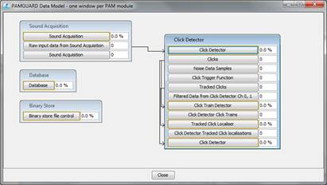
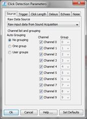

Figure 2. Hydrophone array manager.
Process 10 channel .wav files using the click detector to detect porpoises and create binary files
To begin we need to analyse the raw .wav data in PAMGUARD. Start PAMGUARD in normal mode. Select File > Add Modules > Sound Processing > Sound Acquisition to add the sound acquisition module. This will allow the raw .wav files to be analysed in PAMGUARD. Next we need a click detector. Go to File > Add Modules > Detector > Click Detector. The click detector module should now appear. Finally we need a database (File > Add Modules > Utilities > Database) and binary storage (File > Add Modules > Utilities > Binary Store).
Now you have added the modules the next stage is to set up everything. Your data model should look like.

Figure 1 The data model should look roughly like this to analyse clicks.
In PAMGUARD you always move from modules on the left to modules on the right when inputting settings. So here we start with sound acquisition and then move to the click detector. Select Detection > Sound Acquisition... In the dialog box set the audio source to Audio file or multiple file, select Select Folder or Files... and choose the folder containing the porpoise .wav files. Now that the sound acquisition knows you are dealing with ten channels of data you will need to create a ten channel hydrophone array in the array manager. Go to File > Hydrophone Array... and use Import. to select the ten channel array file for this porpoise data. (In Exercise 1-2 folder) The hydrophone array manager dialog box should look like.
Figure 2. Hydrophone array manager.
Now set up the click detector. Go to the Click Detection menu on the main screen and select Detection Parameters.... We want to detect clicks on all channels so select the check box for all ten channels. Make sure that no grouping is selected. This is usually sensible for wide aperture arrays (see note). Select the Trigger tab and ensure check boxes are selected for every channel. This ensures each channel individually runs the click detection algorithm. Click OK.


Figure 3. Make sure the channels are not grouped and all selected in the trigger tab.
Now we want to set up filters to optimise our chances of finding porpoise clicks. There are two filters in the click detector, a pre filter and digital trigger filter. The pre filter filters the raw sound data used by the click detector module. We want to get rid of low frequency noise so a high pass filter at 20kHz is ideal. Select Click Detection > Digital Pre Filter... In the dialog which pops up create a high pass Butterworth filter at 20000Hz.

Figure 4. The digital pre filter should be set to 20kHz, high pass.
Now we need to set the digital trigger filter. The digital trigger filter is only used by the algorithm which searches for clicks. The final saved click waveforms and spectra are taken from the raw sound data filtered only by the pre filter. Since porpoises have narrow band high frequency clicks it is sensible to search for clicks only in a narrow frequency band. Hence our digital trigger filter will be a band pass, from 100kHz to 150kHz. Select Click Detection > Digital trigger filter... In the dialog which pops up create a band pass Chebyshev filter between 100000 and 150000Hz.

Figure 5. The digital trigger filter should be a band pass between 100 and 150kHz.
The click detector is now set up to detect clicks in the porpoise frequency range. However, although we have optimised the click detector for porpoise like vocalisations it will still detect many different types of sounds. In order to determine whether porpoise are present we need to classify clicks. For this we can use the PAMGUARD click classifier. Go to Click Detection > Click Classification. In the Click Classifier Selection drop down box select Classifier with frequency sweep. Select New to bring up a new click classifier settings dialog. In the bottom of the dialog box use the Set Defaults button to create default porpoise parameters. Click OK.

Figure 6. The click classifier has default settings for porpoise clicks.
You've now created a porpoise click classifier. To ensure that classifier is applied to data make sure that the Run classification online and Enable check boxes are selected.

Figure 7. Click classifier manager.
We have now set the detector click detector up to detect and classifiy porpoise vocalisations. To run select Detection > Start

Figure 8. The click detector running through the ten channel .wav files should look something like the above.
A note on groups. In many detectors you have the option of "grouping channels". Grouping tells PAMGUARD to automatically calculate extra information for those channels which have been selected as belonging to a group. Grouped channels are saved as a single data unit containing information from each channel. For example, a towed array contains two closely spaced hydrophones. These two channels, when analysed in PAMGUARD, are usually grouped. If a click is detected on one of the hydrophones then a waveform clip is also automatically recorded from the other channel; this is then saved as a data unit containing information on both channels. PAMGUARD can calculate extra information for any data unit which contains more than channel of information. For our towed array, two clicks allow bearing information to be calculated for bearing time displays and target motion analysis. In general widely spaced hydrophones are not grouped.